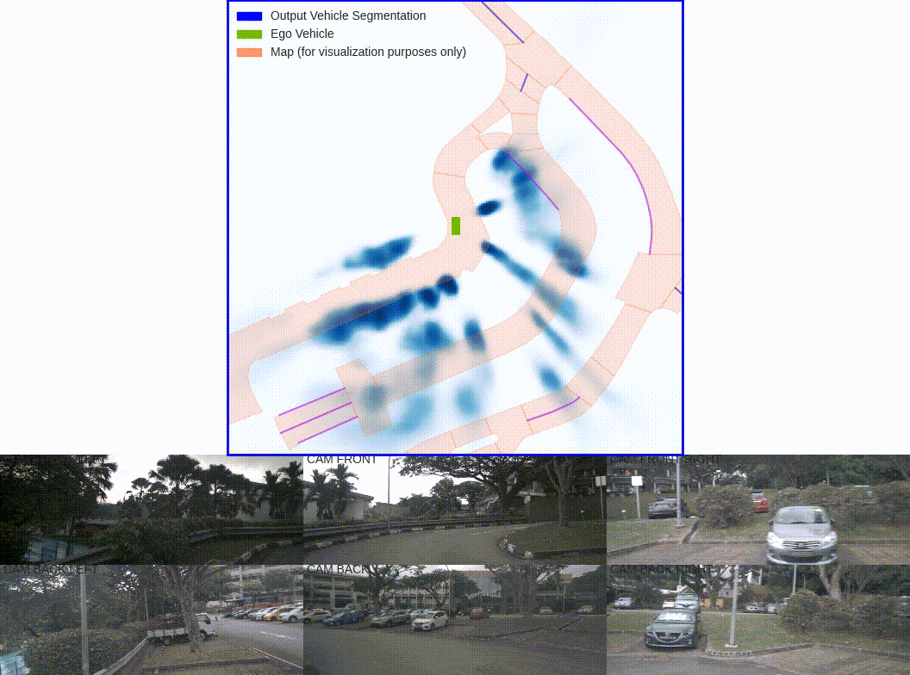

A Perspective on Birds Eye View (BEV) Networks
Why BEV Networks?
If you’ve been following advancements in 3D perception for autonomous driving, you’ve likely come across Bird’s Eye View (BEV) networks. But what are they? There are many different approaches these days, but to put it simply, a BEV network is a type of deep learning model that takes in sensor input such as images form a camera and outputs a representation of the scene from a top-down perspective. They’re becoming a go-to method for enhancing how self-driving cars “see” the world.
Shown above is one of the pioneering papers in this space, Lift-Splat-Shoot. Using inputs from six cameras of around the driving vehicle, this BEV network is able to generate a single unified representation of the surrounding vehicles.
What makes BEV so attractive? It handles three crucial symmetries:
- Translation Equivariance: Shift an image, and the output shifts along with it.
- Permutation Invariance: The camera order doesn’t matter; the results are the same.
- Ego-Frame Isometry Equivariance: No matter where the camera is placed, it’ll detect the same objects in the ego frame.
By preserving these properties and being fully end-to-end differentiable, BEV networks streamline the perception process.
Datasets That Power BEV
To get BEV networks to work, we rely on some heavyweight datasets offering diverse scenes for training and testing. Three of the big names are:
- KITTI: A well-known benchmark with over 7,500 samples for testing with both 2D and 3D annotations.
- nuScenes: A massive dataset with 1,000 scenes, each lasting 20 seconds, offering a 360-degree field of view.
- Waymo Open Dataset (WOD): One of the largest autonomous driving datasets with nearly 800 sequences for training.
Other datasets worth mentioning include Argoverse, H3D, and Lyft L5, which are also popular for testing BEV models.
Different BEV Approaches
There’s no single “right” way to transform images from regular perspective view (PV) into BEV. Researchers have explored several approaches, but they generally fall into two main categories:
Geometric-Based PV2BEV
- Homography-Based: Applies simple geometric transformations to get a BEV-like view. It’s more of an approximation.
- Depth-Based: Uses depth info to project 2D images into 3D space, creating voxels to handle the transformation.
Notable works include Lift-Splat-Shoot, Fiery, and BEVDepth.
Network-Based PV2BEV
- MLP-Based: These models use multilayer perceptrons (MLPs) to map PV images into BEV space, learning the transformation through data.
- Transformer-Based: Transformers are becoming more popular due to their ability to handle relationships between features in a data-driven way.
Notable works include BEVFormer and PanopticBEV.
How Do We Compare These Methods?
Comparing BEV methods isn’t easy. Each approach has its strengths and weaknesses. That’s where Simple-BEV comes in—a benchmark designed to level the playing field for various BEV methodologies. By simplifying the comparison, it helps researchers evaluate models more fairly.
Multi-Task Learning with BEV Networks
BEV networks often deal with multiple tasks like object detection and segmentation. Multi-task learning is a popular way to handle this, and one method that stands out is Uncertainty Weighting, where tasks are prioritized dynamically based on their difficulty or importance.
Other methods include GradNorm and Meta-Learning Task Weighting, which adjust task weights to balance performance across different objectives.
Tools of the Trade
Thankfully, we’re not starting from scratch. A couple of fantastic tools make working with BEV networks easier:
- OpenMM: A modular and scalable framework for tasks like object detection and segmentation, offering the popular mmdetection3d toolkit for BEV networks.
- PyTorch Lightning: A framework for organizing PyTorch models, helping with modularization and providing support for visualizers, profilers, and more.